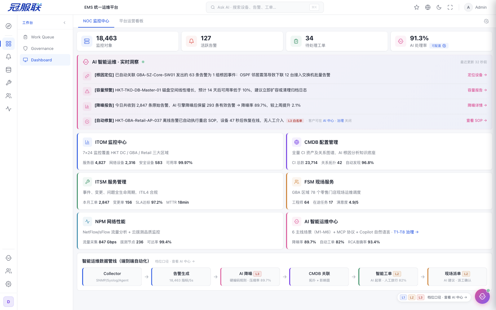

Work Queue · 行动入口
Act II · 07 / 18
U1 / U2 默认首屏
打开 EMS，
就是你的待办清单
告警、工单、审批、派工、SLA —— 一个队列全收。AI 排序 + 预填，人只需做决策。
"不用找、不用切系统、不用自己判断优先级。"
— EMS 设计基线 · Work Queue

告警 · 工单 · 审批 · 派工 · 交接 · SLA 预警
六类待办，右侧按类型加载详情。
行动入口 · 系统告诉你该做什么
Act II · Work Queue
Governance Console · 治理入口
Act II · 08 / 18
U3 / U4 默认首屏
AI 做得怎么样，
花了多少钱，
怎么刹车
审批队列、成本账单、熔断状态、AI 采纳率与人工修正率，一屏看清。
T1–T8 八项治理，让 IT 主管敢在生产环境放心用。
— EMS 设计基线 · AI 治理面板

转单放行 · 变更审批 · 服务请求 · 白名单申请
四类审批
—— 与 Work Queue 共享数据源。
治理入口 · AI 的可信与可控
Act II · Governance
三个入口 + 平台底座
Act II · 09 / 18
同一个平台 · 三种视角
三张面孔，一个平台



一线看队列，中层看治理，高层看大屏 ——
角色绑定，各取所需，向下兼容现有系统。
— EMS 设计基线 · 角色绑定默认首屏
一个平台 · 三种视角 · 角色绑定
Act II · Overview